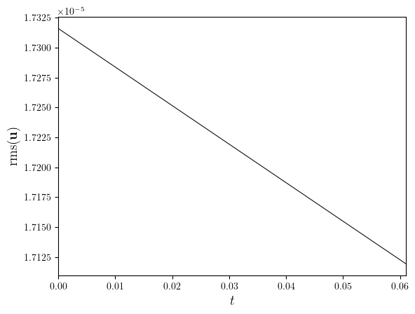
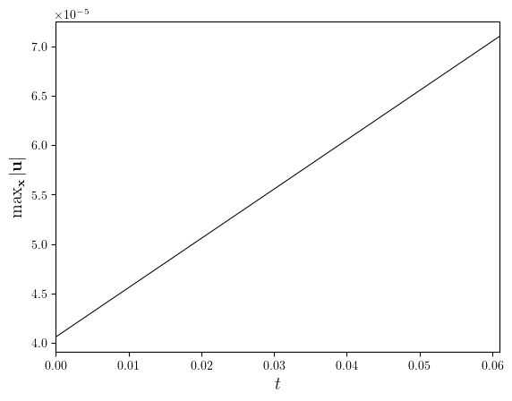
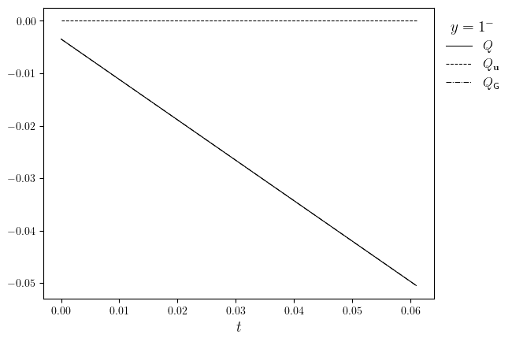
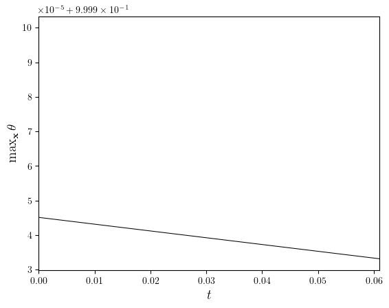
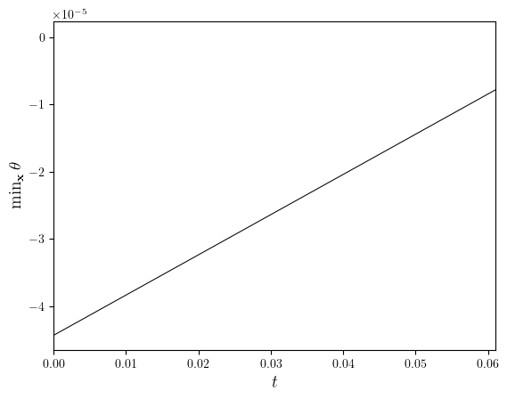

Evolving convection of a Darcy fluid#
Create and run the simulation#
from functools import partial
import numpy as np
from lucifex.solver import OptionsPETSc
from lucifex.fdm import AB1, CN
from lucifex.sim import run, xdmf_to_npz
from lucifex.plt import (
plot_colormap, create_animation, plot_line, save_figure,
display_animation, get_ipynb_file_name, set_ipynb_variable,
)
from crocodil.dns import dns_darcy_evolving
STORE = 1
WRITE = None
DIR_ROOT = f'./figures/{get_ipynb_file_name()}'
DIR_PARAMS = ('Ra', 'Nx', 'Ny')
simulation = dns_darcy_evolving(
store_delta=STORE,
write_delta=WRITE,
dir_root=DIR_ROOT,
dir_params=DIR_PARAMS,
)(
aspect=2.0,
Nx=64,
Ny=64,
cell='quadrilateral',
scaling='advective',
Ra=500.0,
theta_ampl=1e-4,
theta_freq=(14, 14),
theta_seed=(456, 987),
D_adv=AB1@CN,
D_diff=CN,
theta_stabilization=10.0,
theta_petsc=None,
flow_petsc=(OptionsPETSc('cg', 'hypre'), None),
diagnostic=True,
)
n_stop = set_ipynb_variable('N_STOP', 500)
dt_init = 1e-6
n_init = 10
run(simulation, n_stop=n_stop, dt_init=dt_init, n_init=n_init, show_progress=True)
if WRITE: xdmf_to_npz(simulation, delete_xdmf=False)
theta, u, psi = simulation['theta', 'u', 'psi']
save_fig = partial(save_figure, dir_path=simulation.dir_path, prefix=False)
Environment variable `N_STOP=12`
Visualization#
time_slice = slice(0, None, 2)
titles = [f'$\\theta(t={t:.3f})$' for t in theta.time_series[time_slice]]
anim = create_animation(
plot_colormap,
colorbar=False,
)(theta.series[time_slice], title=titles)
anim_path = save_fig(f'{theta.name}(t)', return_path=True)(anim)
display_animation(anim_path)
Diagnostics#
uRMS, uMinMax = simulation['uRMS', 'uMinMax']
uMax = uMinMax.sub(1)
fig, ax = plot_line(
(uRMS.time_series, uRMS.value_series),
x_label='$t$',
y_label='$\mathrm{rms}(\mathbf{u})$',
)
save_fig('uRMS(t)', prefix=False)(fig)
fig, ax = plot_line(
(uMax.time_series, uMax.value_series),
x_label='$t$',
y_label='$\max_{\mathbf{x}}|\mathbf{u}|$',
)
save_fig('uMax(t)', prefix=False)(fig)


q = simulation['q']
q, qPlus, qMinus = q.split()
fig, ax = plot_line(
[(q.time_series, [np.sum(i) for i in q.value_series]), (q.time_series, q.value_series)],
cyc='black',
x_label='$t$',
legend_labels=['$Q$', '$Q_{\mathbf{u}}$', '$Q_{\mathsf{G}}$'],
legend_title='$y=1^-$',
)
save_fig('q(t)', prefix=False)(fig)

thetaMinMax = simulation['thetaMinMax']
thetaMin, thetaMax = thetaMinMax.split()
fig, ax = plot_line(
(thetaMax.time_series, thetaMax.value_series),
x_label='$t$',
y_label='$\max_{\mathbf{x}}\\theta$',
)
save_fig('thetaMax(t)', prefix=False)(fig)
fig, ax = plot_line(
(thetaMin.time_series, thetaMin.value_series),
x_label='$t$',
y_label='$\min_{\mathbf{x}}\\theta$',
)
save_fig('thetaMin(t)', prefix=False)(fig)

